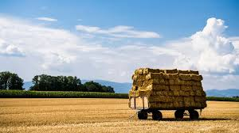
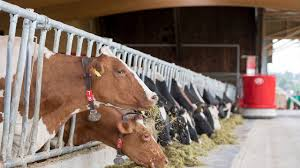

Menu
Accueil
Actualités
Prochaines votations
Derniers résultats
Instances politiques
La politique en Suisse
Archives
L'équipe
Résultat des votations fédérales du 23 septembre 2018
Arrêté fédéral du 13.03.2018 concernant les voies cyclables et les chemins et sentiers pédestres (contre-projet direct à l'initiative populaire «Pour la promotion des voies cyclables et des chemins et sentiers pédestres [initiative vélo]»)

Initiative populaire du 26.11.2015 «Pour des denrées alimentaires saines et produites dans des conditions équitables et écologiques (initiative pour des aliments équitables)»

Initiative populaire du 30.03.2016 «Pour la souveraineté alimentaire. L'agriculture nous concerne toutes et tous»